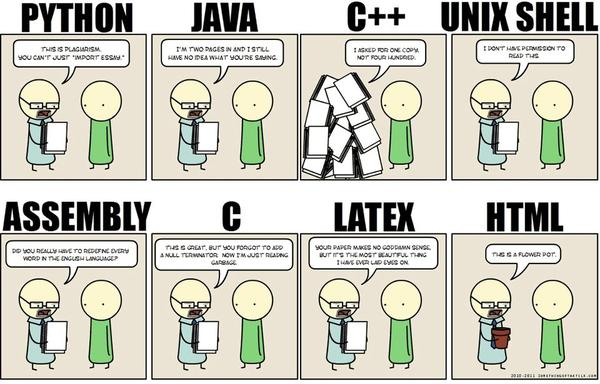
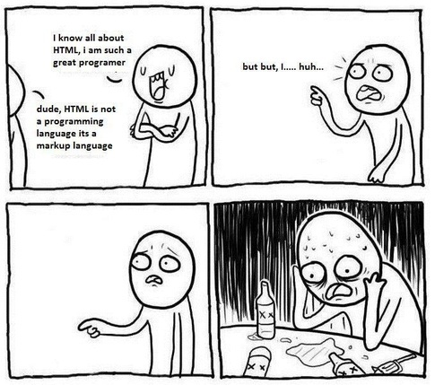

با کدام زبان برنامهنویسی شروع کنیم؟
اگر قصد دارید برنامهنویسی رو شروع کنید، به احتمال زیاد این سوال براتون پیش اومده که چه زبانی برای شروع مناسبتره؟ گاهی افراد تازهکار ماهها وقت صرف این میکنن که یک زبان رو انتخاب کنن و برنامهنویسی رو شروع کنن. طبیعیه که سوالات زیادی برای کسی که میخواد الفبای برنامهنویسی رو یاد بگیره پیش بیاد. سوالاتی از قبیل این که کدام زبان «قدرت» بیشتری داره؟ کدام زبان برای یادگیری «سادهتر» است؟ ویا کدام زبان «سرعت» بیشتری داره؟
از طرفی معمولا برنامهنویسها با تعصب خاصی نسبت به زبان برنامهنویسی انتخابی خودشون نظر میدن. ممکنه چندین دلیل برای اثبات این که فلان زبان بهترین زبان برای یادگیریه یا فلان زبان به درد یادگیری نمیخوره بیارن و حرفهایی بزنن که تازهکارها رو گیجتر بکنه و انتخاب رو براشون سختتر.
اولین زبان برای یادگیری: زبان انگلیسی
زبانهای برنامهنویسی سریع تغییر میکنن و تکنولوژیهای جدید به سرعت جایگزین تکنولوژیهای قبلی میشن. سرعت این جابجایی به حدی زیاده که فرصت ترجمهی مطالب پیش نمیاد. حتی اگر آموزشهای مناسب به زبان فارسی داشته باشید، اگر جایی به مشکل برخورد بکنید، احتمال این که جواب سوالاتتون رو در انجمنهای فارسی به دست بیارید خیلی پایینه. همینطور میزان پیشرفتتون توی برنامهنویسی همیشه تا یه سطح خاص باقی میمونه.
بنابراین اگر سطح دانش شما از زبان انگلیسی در حدی نیست که بتونید در کلاسهای آنلاین برنامهنویسی شرکت کنید یا کتابهای برنامهنویسی رو بخونید، به جای خوندن این مقاله، دنبال یک کلاس زبان خوب و مناسب با شرایط خودتون باشید و از اونجا شروع کنید. نگران زمان نباشید، سریعتر از اون چیزی که فکر میکنید در زبان پیشرفت خواهید کرد و فکر میکنم حتی اگر از سطوح پایین زبان هم شروع کنید، بعد از یک سال شرکت در کلاسهای زبان کم کم میتونید مطالب رو متوجه بشید و شروع کنید به یادگیری.
بهترین زبان برای شروع: ...
زبانهای زیادی برای برنامهنویسی وجود داره و هر کدوم از اونها یک سری ویژگیهای خوب دارن و طبیعتا یک سری مشکلات. من بهتون قول میدم که با بررسی مزایا و معایب این زبانها به جای خاصی نمیرسیم و نهایتا لیستمون رو بتونیم برسونیم به پنج، شش زبان. همچنین نتیجهی مشورت با سایر برنامهنویسها هم که سردرگمی بیشتر بود. بنابراین باید با یک دید دیگه به قضیه نگاه کنیم. برای این کار بیاید اول از خودمون بپرسیم که «اگر زبان برنامهنویسی اشتباه رو برای شروع انتخاب کنم چی میشه؟»
اگر زبان برنامهنویسی اشتباه رو برای شروع آغاز کنم چی؟
حقیقت اینه که در ابتدای کار، بیشتر از این که زبان برنامهنویسی رو یاد بگیرید، نگاه برنامهنویسی رو یاد میگیرید. یعنی یاد میگیرید که چطور مثل یک برنامهنویس به مسائل نگاه کنید و بتونید با استفاده از الگوریتمهای برنامهنویسی مشکلات رو حل کنید. این مساله مهمترین چیزیه که یک برنامهنویس تازهکار باید یاد بگیره و بیشتر پیچیدگیهای اولیه برنامهنویسی هم مربوط به شکل گرفتن این روش نگاه به مسائل در ذهن میشه.
هر یک از زبانهای برنامهنویسی رو که انتخاب کنید، برای این منظور مناسباند. ضمن این که برنامهنویسی که این طرز نگاه رو یاد گرفته میتونه سایر زبانهای برنامهنویسی رو هم به سرعت یاد بگیره و ظرف چند ماه به یک زبان دیگه کوچ کنه.
بنابراین از این نظر هیچ زبانِ برنامهنویسیِ اشتباهی برای شروع وجود نداره. و باید کلا این نگرانی رو از ذهنتون پاک کنید که ممکنه زبانی که انتخاب کردید اشتباه باشه.
حالا که این نگرانی برطرف شد با توجه به معیارهای زیر یک زبان برنامهنویسی رو انتخاب کنید و به صورت جدی تصمیم بگیرید که ادامهاش بدید.
۱- دوستانتون با چه زبانهای برنامهنویسیای برنامه مینویسند؟ این مهمترین سوالیه که باید بپرسید. اگر اطرافیانتون هم برنامهنویس هستند و میتونن در زمینهی زبان خاصی راهنماییتون کنند، پیشرفت سریعتری خواهید داشت.
۲- برای کدام زبان منابع بیشتری برای آموزش در دسترس دارید؟ این روزها بسیاری از دانشگاههای مطرح دنیا در سایتهای آموزشی از جمله کورسرا و یوداسیتی کلاسهای آموزشی خوبی در زمینهی برنامهنویسی میذارن، که بیشترشون رایگان هستن. یک مسیر رو انتخاب کنید و پیش برید.

{kind=link}
{kind=link}
دیدگاهها
Comments powered by Disqus